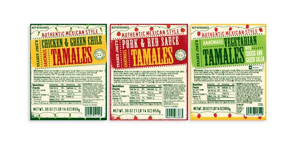

Here you can read about some of the meals I like to make/eat and the recipes for how to make them!
Zeus' Pasta:
I have made this pasta a lot and I just really love it because it is made all in one pot and it is super cheap! It's a great meal if you're having a double date or a couple of friends over. I would say it feeds maybe four to five people depending on how hungry everyone is. It's also vegetarian and can probably be made gluten free with a couple of adjustments.
Ingredients:
- 12 ounces of pasta (any pasta is good)
- 1 can (15 ounces) of diced tomatoes with liquid
- 1 large sweet onion cut into thin strips
- 4 cloves of garlic thinly sliced or diced
- 1/2 teaspoon of red pepper flakes
- 2 teaspoons of dried oregano leaves of 4 teaspoons of fresh oregano leaves
- 2 large sprigs of basil, chopped
- 4.5 cups of vegetable broth (don't get low sodium!!)
- 2 tablespoons of olive oil
- Parmesan cheese(to put on top after you're done
Directions:
- Place pasta, tomatoes, onion, garlic, and basil in a large pot and pour the vegetable oil over it. Sprinkle the top with pepper flakes, oregano, and olive oil.
- Cover the pot and bring to a boil. Once it is boiling reduce it to a low simmer and keep it covered for about 10 minutes stirring occasionally. Make sure to stir it or the pasta will burn and stick to the bottom and your meal will taste gross.
- Cook until almost all the liquid is evaporated/soaked up by the noodles (there should be about an inch of liquid in the pan). Put some salt, pepper, and Parmesan cheese on it and enjoy!
Source
Spicy Turkey Chili:
My mother makes this chili/soup because its delicious and it can also be frozen in indiviual tupperwares and eaten another day for lunch or dinner. I like this soup because it is very healthy and not too spicy but not bland at all.
Ingredients:
- 1 teaspoon of olive oil
- 1 pound of ground turkey
- 1 small onion, diced
- 1 teaspoon of ground coriander
- 1 teaspoon of ground cumin
- 1/4 teaspoon of salt
- 2 cans of navy beans, rinsed and drained
- 1 can of chicken broth
- 1 10 ounce package of frozen whole kernel corn
- 1 can of chopped mild green chilies
- 2 tablespoons of hot sauce
- 1 cup of chopped fresh cilantro
Directions:
- Heat olive oil in skillet and add the turkey and onion. Cook until the turkey is golden brown
- Add coriander, cumin, and salt. Cook for 1 minute
- In a small bowl, mash 1/2 of the beans
- Add mashed and unmashed beans, chicken broth, corn, and green chilies.
- Heat to boiling, then add the hot sauce. Finish the dish by sprinkling it with cilantro
Tamale Dinner

This meal is crazy good but also crazy cheap. It takes about five minutes to prepare which is why I love it. Impress your friends by making it seem like you have enough time to cook a full meal all by yourself.
Ingredients:
- 1 tamale from Trader Joes
- 1 package of frozen veggies
Directions:
- Cook the tamale according to instructions
- Cook the veggies according to instructions
- Place the tamale on top of the vegetables